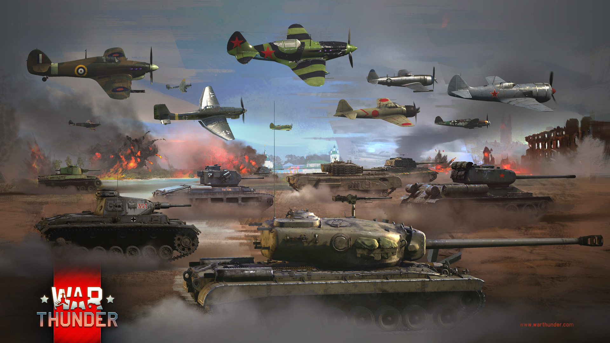

Enlisted is a free to play game which has the player directing AI soldiers while fighting alongside them.
 War Thunder features WW2 planes, ships, and tanks. The damage model is really detailed!
The COH series brings WW2 to the RTS genre.
The Valkyria Chronicles series is SEGA's anime-style take on WW2. The story and characters are very memorable.
Battlefield returns to WW2 with its signature chaos and fun.